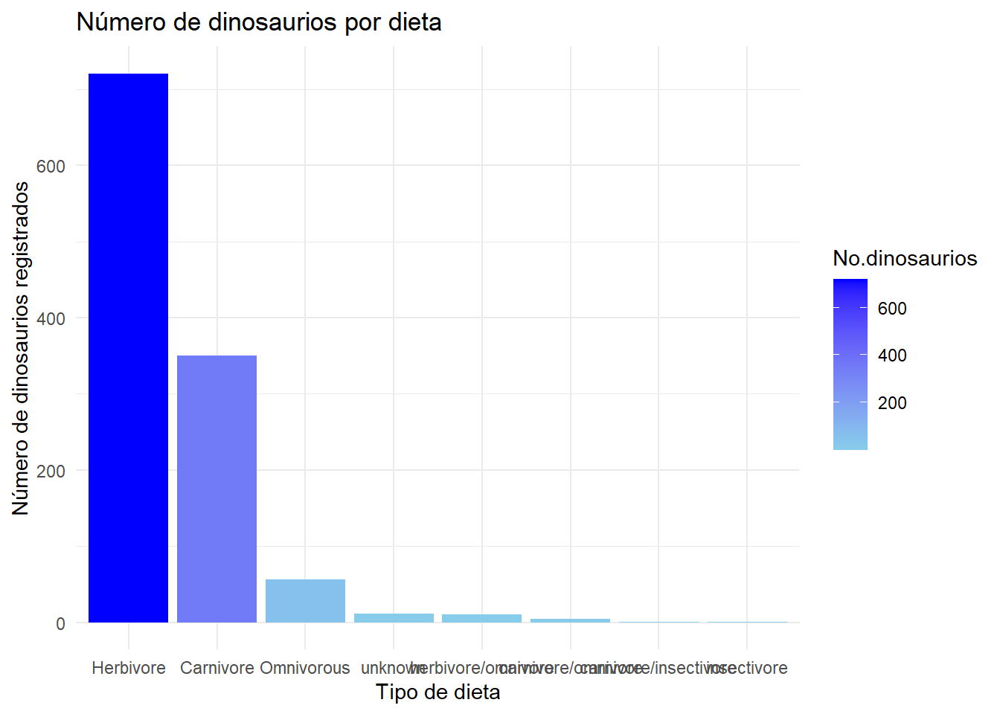
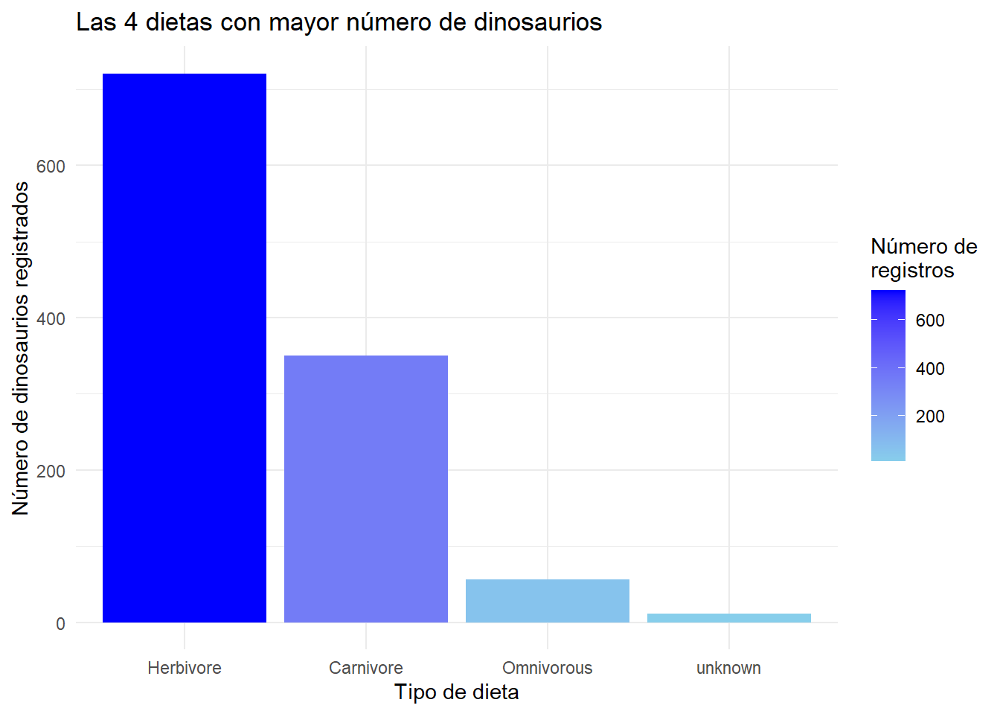
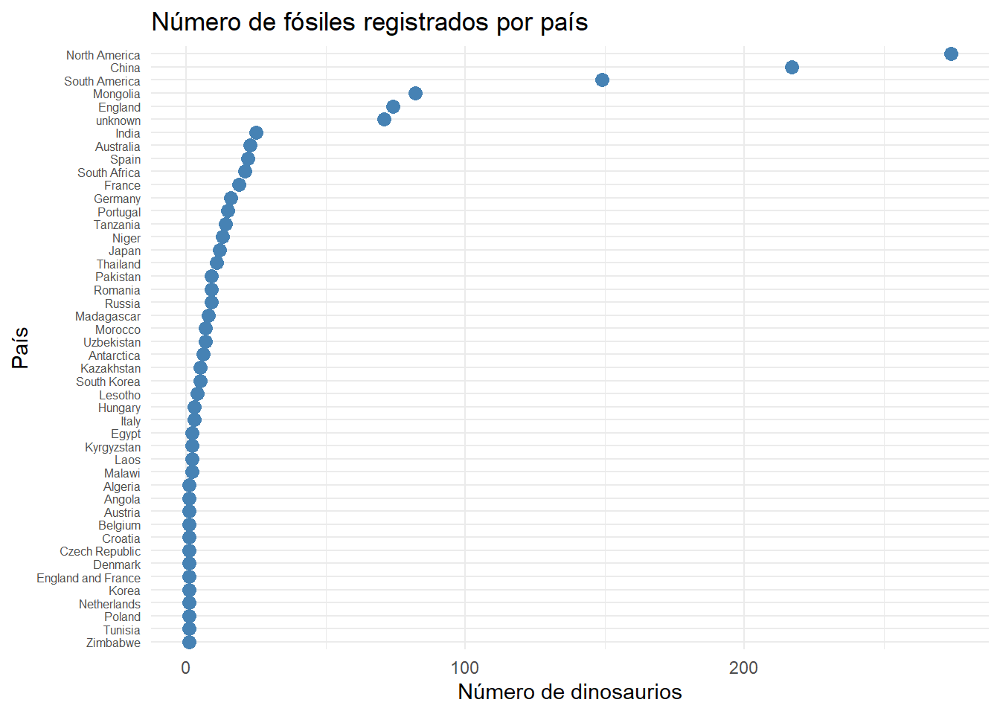
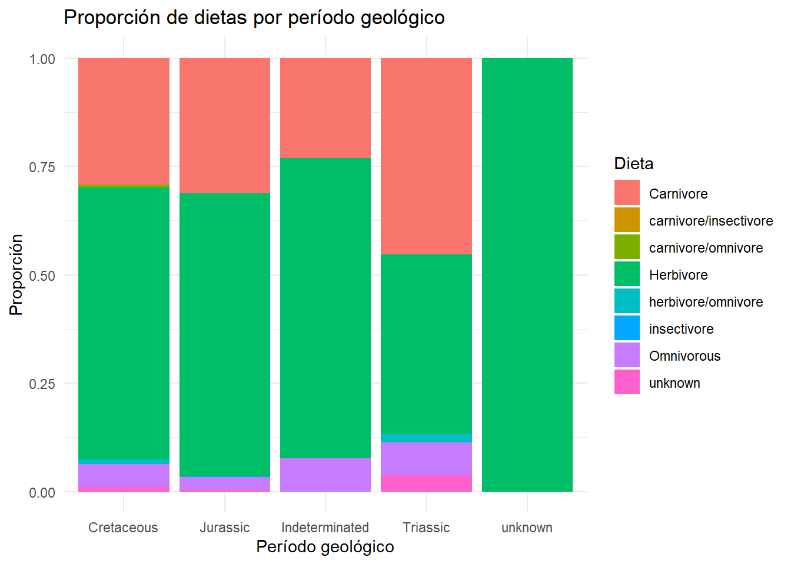
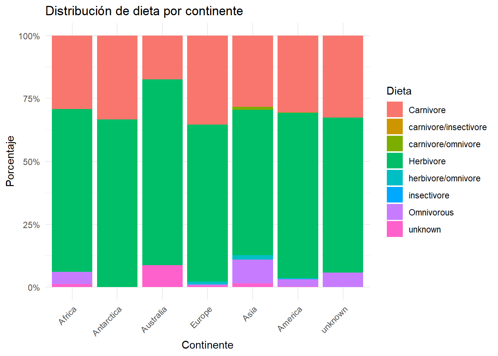
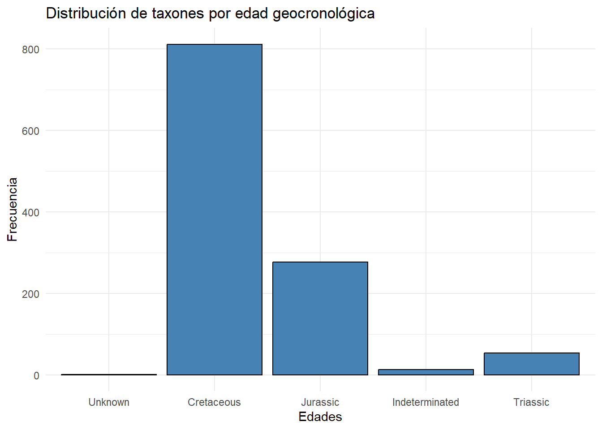

# kaggle datasets download -d kumazaki98/dinosaur-list --unzip -p dataProyecto_Final_Quarto
Proyecto Final del curso intersemestral “Code & Data Bootcamp: Git, Bash y R”
Fecha: 30 de junio 2026
Autores:
Brenda Avelina López Muñiz
Jorge Alberto Rivera Aquino
1. Introducción
Este proyecto analiza un data set con información sobre diferentes grupos de dinosaurios (Dinosauria), planteando las preguntas de investigación más relevantes.
La base de datos contiene información sobre los dinosaurios descubiertos hasta ahora. Los datos se catalogan como discretos de caracter nominal. El data set puede ser consultado en la siguiente liga Base de datos de Dinosaurio

Figura 1. Reconstrucción de fauna del Cretácico Tardío.
2. Exploración del dataset
2.1 Documentación del proceso de descarga
La base de datos fue descargada directamente de la página y cargada en el código como documento. Sin embargo, es posible realizar la descarga a través del siguiente código desde la terminal:
2.2 Información contenida en la base datos
El dataset cuenta con cuatro columnas corresponientes a las categorías:
Nombre (Name): Refiere a su clasificación taxonómica a nivel de género
Periodo (Period): Rrefiere al periodo geológico o escala temporal a la que es asignado el registro
Tipo de Dieta (Diet): Descrive el tipo de dienta inferido para ese taxón
País (Country): Señala el país de colecta y registro del ejemplar
dinosaur <- read.csv("data/dinosaur.csv")dinosaurios <- read.csv("data/dinosaur.csv",header=TRUE)
colnames(dinosaurios)[1] "Name" "Period" "Diet" "Country" class(dinosaurios)[1] "data.frame"2.3 Dimensiones del DataFrame
El dataframe cuenta con un total de 1,154 filas y 4 columnas
ncol(dinosaurios)[1] 4nrow(dinosaurios)[1] 11543. ANÁLISIS Y RESULTADOS
3.1 Preguntas de investigación
La preguntas de investigación planteadas de acuerdo con el dataset son las siguientes:
¿Qué dieta es la predominante en la muestra total de los dinosaurios registrados? -
¿En qué país se han encontrado más fósiles de dinosaurios?
¿Existe alguna relación entre la dieta y el periodo?
¿Existe alguna relación entre la dieta y la región geográfica?
¿Cómo se distribuyen los taxones de aceurdo con el periodo geológico?
3.2 Limpieza básica de datos
head(dinosaurios) Name Period Diet Country
1 Aardonyx Jurassic herbivore South Africa
2 Abelisaurus Cretaceous carnivore South America
3 Abrictosaurus Jurassic herbivore South Africa
4 Abrosaurus Jurassic herbivore China
5 Abydosaurus Cretaceous herbivore North America
6 Acanthopholis Cretaceous herbivore Englanddim(dinosaurios)[1] 1154 44 Columnas y 1154 filas
names(dinosaurios)[1] "Name" "Period" "Diet" "Country"library(dplyr)
Adjuntando el paquete: 'dplyr'The following objects are masked from 'package:stats':
filter, lagThe following objects are masked from 'package:base':
intersect, setdiff, setequal, unionglimpse(dinosaurios)Rows: 1,154
Columns: 4
$ Name <chr> "Aardonyx", "Abelisaurus", "Abrictosaurus", "Abrosaurus", "Aby…
$ Period <chr> "Jurassic", "Cretaceous ", "Jurassic", "Jurassic", "Cret…
$ Diet <chr> "herbivore", "carnivore", "herbivore", "herbivore", "herbivore…
$ Country <chr> "South Africa", "South America", "South Africa", "China", "Nor…3.3 Limpieza básica de datos
colSums(is.na(dinosaurios)) Name Period Diet Country
0 0 0 0 class(dinosaurios$Name)[1] "character"class(dinosaurios$Period)[1] "character"class(dinosaurios$Diet)[1] "character"class(dinosaurios$Country)[1] "character"library(dplyr)
dinosaurs_limpio <- dinosaurios %>%
tidyr::drop_na()3.2.1 Corrección de datos
La base de datos no es homogénea. Entre sus categorías, se combina nomenclatura como “herbivore” y “(herbivore)”. Esto produce un análisis erróneo, por lo que en los códigos siguientes se reemplazan las etiquetas con escritura incorrecta para el caso de “Dieta”.
dinosaur_limpio <- dinosaurios %>%
mutate(Diet = recode(Diet, "herbivore" = "Herbivore")) %>%
mutate(Diet = recode(Diet, "(herbivore)" = "Herbivore")) %>%
mutate(Diet = recode(Diet, "omnivorous" = "Omnivorous")) %>%
mutate(Diet = recode(Diet, "omnivore" = "Omnivorous")) %>%
mutate(Diet = recode(Diet, "(carnivore)" = "Carnivore")) %>%
mutate(Diet = recode(Diet, "carnivore" = "Carnivore")) %>%
mutate(Diet = recode(Diet, "carnivore?" = "Carnivore")) %>%
mutate(Diet = recode(Diet, "(unknown)" = "unknown")) %>%
mutate(Diet = recode(Diet, "?" = "unknown")) %>%
mutate(Period = recode(Period, "Cretaceous " = "Cretaceous"))%>%
mutate(Period = recode(Period, "(unknown)" = "unknown"))La columna “Country” tiene, en algunos casos, más de un país y en otros, comentarios u observaciones que no corresponden con la categoría. Para ello, se observa que los comentarios terminan en punto (.) y los que contienen diferentes países et (&). Tomando ventaja de este patrón, se realiza el siguiente código:
dinosaurios$Country[
grepl("\\.$", dinosaur_limpio$Country) |
grepl("&", dinosaur_limpio$Country) |
grepl(",",dinosaur_limpio$Country)
] <- "unknown"dim(dinosaurios)[1] 1154 4dim(dinosaurs_limpio)[1] 1154 4Las filas y columnas no fueron modificadas, sin embargo si se modificaron las varibles nominales de las categorías “Diet”, “Country” y “Period”, eliminando los datos cuyos valores no pertenecían a la categoría.
unique(dinosaurios$Diet) [1] "herbivore" "carnivore" "carnivore/insectivore"
[4] "(herbivore)" "omnivore" "herbivore/omnivore"
[7] "(unknown)" "(carnivore)" "unknown"
[10] "Carnivore" "omnivorous" "?"
[13] "Herbivore" "carnivore/omnivore" "carnivore?"
[16] "insectivore" unique(dinosaur_limpio$Diet)[1] "Herbivore" "Carnivore" "carnivore/insectivore"
[4] "Omnivorous" "herbivore/omnivore" "unknown"
[7] "carnivore/omnivore" "insectivore" unique(dinosaur_limpio$Period) [1] "Jurassic" "Cretaceous " "Cretaceous"
[4] "Triassic" "Jurassic/Cretaceous" "Late Triassic"
[7] "Late Cretaceous" "Triassic or Jurassic" "Middle Jurassic"
[10] "Early Cretaceous" "Early-Late Cretaceous" "Early Jurassic"
[13] "Triassic/Jurassic" "unknown" unique(dinosaur_limpio$Country) [1] "South Africa"
[2] "South America"
[3] "China"
[4] "North America"
[5] "England"
[6] "Mongolia"
[7] "Morocco"
[8] "Spain"
[9] "Egypt, Niger"
[10] "France"
[11] "South Africa, Lesotho, Zimbabwe"
[12] "Niger"
[13] "Hungary"
[14] "Japan"
[15] "Mongolia (& China?)"
[16] "Tanzania, USA, & Portugal"
[17] "Portugal, USA, & Tanzania"
[18] "Portugal"
[19] "India"
[20] "Russia & China"
[21] "Angola"
[22] "Antarctica"
[23] "Kazakhstan"
[24] "Madagascar"
[25] "Germany"
[26] "Russia"
[27] "Mongolia & China"
[28] "China & Mongolia"
[29] "Australia"
[30] "China & South Korea"
[31] "Tanzania"
[32] "Egypt,Niger, Morocco, Algeria"
[33] "Romania"
[34] "Pakistan"
[35] "Spain, Portugal, England"
[36] "Netherlands"
[37] "Uzbekistan"
[38] "Czech Republic"
[39] "Egypt, Niger, Algeria, Morocco"
[40] "Portugal & USA"
[41] "England, France, Switzerland, Morocco"
[42] "China, Russia, & Mongolia(?)"
[43] "Algeria"
[44] "USA, South Africa, & Zimbabwe"
[45] "Germany & France"
[46] "Belgium"
[47] "England, France, Spain, Portugal"
[48] "South Korea"
[49] "Morocco, Algeria, Egypt"
[50] "Denmark"
[51] "Portugal & Uzbekistan"
[52] "South Africa, Zimbabwe, Lesotho"
[53] "Lesotho"
[54] "Kyrgyzstan"
[55] "Mongolia & Uzbekistan"
[56] "South Africa & China (?)"
[57] "Croatia"
[58] "Laos"
[59] "England, Belgium, USA, France, Mongolia & Spain"
[60] "Egypt"
[61] "Thailand"
[62] "Malawi"
[63] "Korea"
[64] "England, France"
[65] "England and France"
[66] "China, Mongolia & Thailand"
[67] "China & Laos"
[68] "Belgium, England, Germany"
[69] "England, France, Austria, Romania, Belgium"
[70] "Austria"
[71] "Netherlands, Belgium"
[72] "England & Portugal"
[73] "Germany, France, Switzerland, Norway, & Greenland"
[74] "China, Mongolia, Thailand (?), & Russia"
[75] "Mongolia & Canada"
[76] "Mongolia (& China ?)"
[77] "Morocco, Niger & Tunisia"
[78] "France, Czech Republic, Romania, Spain"
[79] "Austria, Romania, France, Hungary"
[80] "Italy"
[81] "Mongolia, USA, Canada & China"
[82] "Egypt & Morocco"
[83] "Austria, France, Romania, Hungary"
[84] "Tunisia"
[85] "Portugal, Spain"
[86] "Spain, Portugal"
[87] "Poland"
[88] "Zimbabwe"
[89] "Formerly referred to Phaedrolosaurus."
[90] "A sauropod with an unusually long neck."
[91] "A troodontid."
[92] "A basal sauropodomorph."
[93] "It was once thought to walk on four legs. This is now unlikely."
[94] "A basal ceratopsian."
[95] "Probably a sauropod."
[96] "A large basal sauropodomorph."
[97] "The only anchiornithid to live in the Cretaceous."
[98] "This name was a nomen nudum for eight years and was only formally described in 2018."
[99] "A very large sauropod."
[100] "A mamenchisaurid sauropod."
[101] "Probably a relative of Jeholosaurus."
[102] "A small oviraptorosaur."
[103] "A hadrosauroid."
[104] "Possibly a titanosaur." Pregunta 1: ¿Qué dieta es la predominante en la muestra total de los dinosaurios registrados?
Se agrupan de acuerdo a su categoría de dieta y se contabiliza el número de dinosaurios dentro de esa categoría
dino_dieta <-dinosaur_limpio %>%
dplyr::group_by(Diet) %>%
summarise(
num_dino=n(),
.groups = "drop"
)A continuación, se muestra gráficamente la relación entre número de registros y dietas.
library(dplyr)
library(ggplot2)
dino_dieta %>%
arrange(desc(num_dino)) %>%
mutate(Diet = factor(Diet, levels = Diet)) %>%
ggplot(aes(x = Diet,
y = num_dino,
fill=num_dino)) +
geom_col() +
scale_fill_gradient(
low = "skyblue",
high = "blue")+
labs(
title = "Número de dinosaurios por dieta",
x = "Tipo de dieta",
y = "Número de dinosaurios registrados",
fill="No.dinosaurios"
) +
theme_minimal() 
Existen distintas categorías con pocos ejemplares, por lo que es conveniente centrar los datos a las columnas más aglomeradas. En el siguiente gráfico, se deduce que, hasta ahora, la dieta predominante en los dinosaurios descubiertos es herbívora.
library(dplyr)
library(ggplot2)
dino_dieta %>%
arrange(desc(num_dino)) %>%
slice(1:4) %>%
mutate(Diet = factor(Diet, levels = Diet)) %>%
ggplot(aes(x = Diet, y = num_dino, fill = num_dino)) +
geom_col() +
scale_fill_gradient(
low = "skyblue",
high = "blue"
) +
labs(
title = "Las 4 dietas con mayor número de dinosaurios",
x = "Tipo de dieta",
y = "Número de dinosaurios registrados",
fill = "Número de\nregistros"
) +
theme_minimal()
Pregunta 2. ¿En qué país se han encontrado más fósiles de dinosaurios?
Se agrupa el número de ejemplares por países en el siguiente código:
dino_paises <-dinosaurios %>% dplyr::group_by(Country) %>% summarise( num_paises=n(), .groups = "drop" )El gráfico muestra que la mayoría de los países cuentan con menos de 100 registros. El sitio con mayores ejemplares es Norte América, seguido por China y Sur América.
library(ggplot2)
#| fig-width: 8
#| fig-height: 18
dino_paises %>%
arrange(desc(num_paises)) %>%
mutate(Country = factor(Country, levels = rev(Country))) %>%
ggplot(aes(x = num_paises, y = Country)) +
geom_point(size = 3, color = "steelblue") +
labs(
title = "Número de fósiles registrados por país",
x = "Número de dinosaurios",
y = "País"
) +
theme_minimal() +
theme(
axis.text.y = element_text(size = 6)
)
Pregunta 3. ¿Existe alguna relación entre la dieta y el periodo?
No existe la suficiente evidencia para asumir que existe una relación entre la dieta y el periodo
library(dplyr)
library(forcats)
library(stringr)
dinosaur_limpio <- dinosaur_limpio %>%
mutate(
Period = str_trim(Period),
Period = fct_collapse(
Period,
"Cretaceous" = c("Cretaceous",
"Early Cretaceous",
"Late Cretaceous",
"Early-Late Cretaceous"),
"Jurassic" = c("Jurassic",
"Middle Jurassic",
"Early Jurassic"),
"Triassic" = c("Triassic",
"Late Triassic"),
"Indeterminated" = c("Jurassic/Cretaceous",
"Triassic or Jurassic",
"Triassic/Jurassic"),
"unknown" = "unknown"
)
)tabla_chi <- table(dinosaur_limpio$Period, dinosaur_limpio$Diet)
resultado <- chisq.test(tabla_chi)Warning in chisq.test(tabla_chi): Chi-squared approximation may be incorrectif (resultado$p.value < 0.05) {
cat("Se rechaza H₀. Existe evidencia estadísticamente significativa de una relación entre el período geológico y la dieta de los dinosaurios (p =",
round(resultado$p.value, 4), ").")
} else {
cat("No se rechaza H₀. No existe evidencia estadísticamente significativa de una relación entre el período geológico y la dieta de los dinosaurios (p =",
round(resultado$p.value, 4), ").")
}No se rechaza H₀. No existe evidencia estadísticamente significativa de una relación entre el período geológico y la dieta de los dinosaurios (p = 0.4987 ).ggplot(dinosaur_limpio,
aes(x = Period, fill = Diet)) +
geom_bar(position = "fill") +
labs(
title = "Proporción de dietas por período geológico",
x = "Período geológico",
y = "Proporción",
fill = "Dieta"
) +
theme_minimal()
Pregunta 4: ¿Existe alguna relación entre la dieta y la región continental de los registros?
Los registros de dinosaurios están distribuidos a travéz de varias regiones del mundo, incluyendo 63 paises, debido a esto, se agruparon los datos de sitio de colecta (Country) de acuerdo a su región continental para tener una mejor visivilidad de los datos.
library(dplyr)
library(forcats)
library(stringr)
dinosaur_limpio <- dinosaur %>%
mutate(
Country = str_trim(Country),
Country = fct_collapse(
Country,
"America" = c("North America",
"South America"),
"Europe" = c("England",
"Spain",
"France",
"Hungary",
"Portugal",
"Germany",
"Romania",
"Spain, Portugal, England",
"Netherlands",
"Czech Republic",
"England, France, Switzerland, Morocco",
"Belgium",
"England, France, Spain, Portugal",
"Denmark",
"Croatia",
"England, France",
"England and France",
"Belgium, England, Germany",
"England, France, Austria, Romania, Belgium",
"Austria",
"Netherlands, Belgium",
"France, Czech Republic, Romania, Spain",
"Austria, Romania, France, Hungary",
"Italy",
"Austria, France, Romania, Hungary",
"Portugal, Spain",
"Spain, Portugal",
"Poland"),
"Africa" = c("South Africa",
"Egypt, Niger",
"Morocco",
"South Africa, Lesotho, Zimbabwe",
"Niger",
"Angola",
"Madagascar",
"Tanzania",
"Egypt,Niger, Morocco, Algeria",
"Egypt, Niger, Algeria, Morocco",
"Algeria",
"Morocco, Algeria, Egypt",
"South Africa, Zimbabwe, Lesotho",
"Lesotho",
"Egypt",
"Malawi",
"Tunisia",
"Zimbabwe"),
"Asia" = c("China",
"Mongolia",
"Japan",
"India",
"Kazakhstan",
"Russia",
"Pakistan",
"Uzbekistan",
"South Korea",
"Kyrgyzstan",
"Laos",
"Thailand",
"Korea"),
"Antarctica" = c("Antarctica"),
"Australia" = c("Australia"),
"unknown" = c("unknown")
)
)Warning: There was 1 warning in `mutate()`.
ℹ In argument: `Country = fct_collapse(...)`.
Caused by warning:
! Unknown levels in `f`: unknownLa agrupación de datos generó 7 niveles de categorías, en los que se incluyen 6 regiones continentales y “deconocido” (Unknown).
unique(dinosaur_limpio$Country) [1] Africa
[2] America
[3] Asia
[4] Europe
[5] Mongolia (& China?)
[6] Tanzania, USA, & Portugal
[7] Portugal, USA, & Tanzania
[8] Russia & China
[9] Antarctica
[10] Mongolia & China
[11] China & Mongolia
[12] Australia
[13] China & South Korea
[14] Portugal & USA
[15] China, Russia, & Mongolia(?)
[16] USA, South Africa, & Zimbabwe
[17] Germany & France
[18] Portugal & Uzbekistan
[19] Mongolia & Uzbekistan
[20] South Africa & China (?)
[21] England, Belgium, USA, France, Mongolia & Spain
[22] China, Mongolia & Thailand
[23] China & Laos
[24] England & Portugal
[25] Germany, France, Switzerland, Norway, & Greenland
[26] China, Mongolia, Thailand (?), & Russia
[27] Mongolia & Canada
[28] Mongolia (& China ?)
[29] Morocco, Niger & Tunisia
[30] Mongolia, USA, Canada & China
[31] Egypt & Morocco
[32] Formerly referred to Phaedrolosaurus.
[33] A sauropod with an unusually long neck.
[34] A troodontid.
[35] A basal sauropodomorph.
[36] It was once thought to walk on four legs. This is now unlikely.
[37] A basal ceratopsian.
[38] Probably a sauropod.
[39] A large basal sauropodomorph.
[40] The only anchiornithid to live in the Cretaceous.
[41] This name was a nomen nudum for eight years and was only formally described in 2018.
[42] A very large sauropod.
[43] A mamenchisaurid sauropod.
[44] Probably a relative of Jeholosaurus.
[45] A small oviraptorosaur.
[46] A hadrosauroid.
[47] Possibly a titanosaur.
47 Levels: A basal ceratopsian. A basal sauropodomorph. ... USA, South Africa, & ZimbabweSe elaboró una tabal de contingencias para observar la relación entre dos variables categóricas (Country y Diet), registrando las interaccipones que presenta cada una de estas variables con las de la otra categoría. Posteriormente se aplicó la prueba de Chi cuadrada Para ver si existe dependencia o relación entre estas variables.
datos <- dinosaur_limpio[, c("Diet", "Country")]
tabla <- table(datos$Diet, datos$Country)
print(tabla)
A basal ceratopsian. A basal sauropodomorph.
(carnivore) 0 0
(herbivore) 0 0
(unknown) 0 0
? 0 0
carnivore 0 0
Carnivore 0 0
carnivore/insectivore 0 0
carnivore/omnivore 0 0
carnivore? 0 0
herbivore 2 1
Herbivore 0 0
herbivore/omnivore 0 0
insectivore 0 0
omnivore 0 1
omnivorous 0 0
unknown 0 0
A hadrosauroid. A large basal sauropodomorph.
(carnivore) 0 0
(herbivore) 0 0
(unknown) 0 0
? 0 0
carnivore 0 0
Carnivore 0 0
carnivore/insectivore 0 0
carnivore/omnivore 0 0
carnivore? 0 0
herbivore 1 1
Herbivore 0 0
herbivore/omnivore 0 0
insectivore 0 0
omnivore 0 0
omnivorous 0 0
unknown 0 0
A mamenchisaurid sauropod.
(carnivore) 0
(herbivore) 0
(unknown) 0
? 0
carnivore 0
Carnivore 0
carnivore/insectivore 0
carnivore/omnivore 0
carnivore? 0
herbivore 1
Herbivore 0
herbivore/omnivore 0
insectivore 0
omnivore 0
omnivorous 0
unknown 0
A sauropod with an unusually long neck.
(carnivore) 0
(herbivore) 0
(unknown) 0
? 0
carnivore 0
Carnivore 0
carnivore/insectivore 0
carnivore/omnivore 0
carnivore? 0
herbivore 1
Herbivore 0
herbivore/omnivore 0
insectivore 0
omnivore 0
omnivorous 0
unknown 0
A small oviraptorosaur. A troodontid.
(carnivore) 0 0
(herbivore) 0 0
(unknown) 0 0
? 0 0
carnivore 0 1
Carnivore 0 0
carnivore/insectivore 0 0
carnivore/omnivore 0 0
carnivore? 0 0
herbivore 0 0
Herbivore 0 0
herbivore/omnivore 0 0
insectivore 0 0
omnivore 1 0
omnivorous 0 0
unknown 0 0
A very large sauropod. Africa Antarctica Australia
(carnivore) 0 0 0 0
(herbivore) 0 0 0 0
(unknown) 0 1 0 0
? 0 0 0 2
carnivore 0 24 2 4
Carnivore 0 0 0 0
carnivore/insectivore 0 0 0 0
carnivore/omnivore 0 0 0 0
carnivore? 0 0 0 0
herbivore 1 52 4 17
Herbivore 0 1 0 0
herbivore/omnivore 0 0 0 0
insectivore 0 0 0 0
omnivore 0 4 0 0
omnivorous 0 0 0 0
unknown 0 0 0 0
Europe Asia China & Laos China & Mongolia
(carnivore) 3 0 0 0
(herbivore) 1 0 0 0
(unknown) 1 5 0 0
? 0 0 0 0
carnivore 61 105 0 0
Carnivore 0 2 0 0
carnivore/insectivore 0 0 0 0
carnivore/omnivore 0 4 0 0
carnivore? 0 3 0 0
herbivore 112 223 1 2
Herbivore 0 1 0 0
herbivore/omnivore 2 7 0 0
insectivore 0 0 0 0
omnivore 1 35 0 0
omnivorous 0 1 0 0
unknown 0 1 0 0
China & South Korea China, Mongolia & Thailand
(carnivore) 0 0
(herbivore) 0 0
(unknown) 0 0
? 0 0
carnivore 0 0
Carnivore 0 0
carnivore/insectivore 0 0
carnivore/omnivore 0 0
carnivore? 0 0
herbivore 1 1
Herbivore 0 0
herbivore/omnivore 0 0
insectivore 0 0
omnivore 0 0
omnivorous 0 0
unknown 0 0
China, Mongolia, Thailand (?), & Russia
(carnivore) 0
(herbivore) 0
(unknown) 0
? 0
carnivore 0
Carnivore 0
carnivore/insectivore 0
carnivore/omnivore 0
carnivore? 0
herbivore 1
Herbivore 0
herbivore/omnivore 0
insectivore 0
omnivore 0
omnivorous 0
unknown 0
China, Russia, & Mongolia(?) Egypt & Morocco
(carnivore) 0 0
(herbivore) 0 0
(unknown) 0 0
? 0 0
carnivore 0 1
Carnivore 0 0
carnivore/insectivore 0 0
carnivore/omnivore 0 0
carnivore? 0 0
herbivore 1 0
Herbivore 0 0
herbivore/omnivore 0 0
insectivore 0 0
omnivore 0 0
omnivorous 0 0
unknown 0 0
England & Portugal
(carnivore) 0
(herbivore) 0
(unknown) 0
? 0
carnivore 0
Carnivore 0
carnivore/insectivore 0
carnivore/omnivore 0
carnivore? 0
herbivore 1
Herbivore 0
herbivore/omnivore 0
insectivore 0
omnivore 0
omnivorous 0
unknown 0
England, Belgium, USA, France, Mongolia & Spain
(carnivore) 0
(herbivore) 0
(unknown) 0
? 0
carnivore 0
Carnivore 0
carnivore/insectivore 0
carnivore/omnivore 0
carnivore? 0
herbivore 1
Herbivore 0
herbivore/omnivore 0
insectivore 0
omnivore 0
omnivorous 0
unknown 0
Formerly referred to Phaedrolosaurus. Germany & France
(carnivore) 0 0
(herbivore) 0 0
(unknown) 0 0
? 0 0
carnivore 1 1
Carnivore 0 0
carnivore/insectivore 0 0
carnivore/omnivore 0 0
carnivore? 0 0
herbivore 0 0
Herbivore 0 0
herbivore/omnivore 0 0
insectivore 0 0
omnivore 0 0
omnivorous 0 0
unknown 0 0
Germany, France, Switzerland, Norway, & Greenland
(carnivore) 0
(herbivore) 0
(unknown) 0
? 0
carnivore 0
Carnivore 0
carnivore/insectivore 0
carnivore/omnivore 0
carnivore? 0
herbivore 1
Herbivore 0
herbivore/omnivore 0
insectivore 0
omnivore 0
omnivorous 0
unknown 0
It was once thought to walk on four legs. This is now unlikely.
(carnivore) 0
(herbivore) 0
(unknown) 0
? 0
carnivore 1
Carnivore 0
carnivore/insectivore 0
carnivore/omnivore 0
carnivore? 0
herbivore 0
Herbivore 0
herbivore/omnivore 0
insectivore 0
omnivore 0
omnivorous 0
unknown 0
Mongolia & Canada Mongolia & China
(carnivore) 0 0
(herbivore) 0 0
(unknown) 0 0
? 0 0
carnivore 0 3
Carnivore 0 0
carnivore/insectivore 0 0
carnivore/omnivore 0 0
carnivore? 0 0
herbivore 0 3
Herbivore 0 0
herbivore/omnivore 0 0
insectivore 0 0
omnivore 1 0
omnivorous 0 0
unknown 0 0
Mongolia & Uzbekistan Mongolia (& China ?)
(carnivore) 0 0
(herbivore) 0 0
(unknown) 0 0
? 0 0
carnivore 0 1
Carnivore 0 0
carnivore/insectivore 0 0
carnivore/omnivore 0 0
carnivore? 0 0
herbivore 1 0
Herbivore 0 0
herbivore/omnivore 0 0
insectivore 0 0
omnivore 0 0
omnivorous 0 0
unknown 0 0
Mongolia (& China?) Mongolia, USA, Canada & China
(carnivore) 0 0
(herbivore) 0 0
(unknown) 0 0
? 0 0
carnivore 1 0
Carnivore 0 0
carnivore/insectivore 0 0
carnivore/omnivore 0 0
carnivore? 0 0
herbivore 0 1
Herbivore 0 0
herbivore/omnivore 0 0
insectivore 0 0
omnivore 0 0
omnivorous 0 0
unknown 0 0
Morocco, Niger & Tunisia America Portugal & USA
(carnivore) 0 0 0
(herbivore) 0 0 0
(unknown) 0 0 0
? 0 0 0
carnivore 0 127 2
Carnivore 0 2 0
carnivore/insectivore 0 1 0
carnivore/omnivore 0 0 0
carnivore? 0 0 0
herbivore 1 278 2
Herbivore 0 0 0
herbivore/omnivore 0 1 0
insectivore 0 1 0
omnivore 0 12 0
omnivorous 0 0 0
unknown 0 1 0
Portugal & Uzbekistan Portugal, USA, & Tanzania
(carnivore) 0 0
(herbivore) 0 0
(unknown) 0 0
? 0 0
carnivore 1 1
Carnivore 0 0
carnivore/insectivore 0 0
carnivore/omnivore 0 0
carnivore? 0 0
herbivore 0 0
Herbivore 0 0
herbivore/omnivore 0 0
insectivore 0 0
omnivore 0 0
omnivorous 0 0
unknown 0 0
Possibly a titanosaur.
(carnivore) 0
(herbivore) 0
(unknown) 0
? 0
carnivore 0
Carnivore 0
carnivore/insectivore 0
carnivore/omnivore 0
carnivore? 0
herbivore 1
Herbivore 0
herbivore/omnivore 0
insectivore 0
omnivore 0
omnivorous 0
unknown 0
Probably a relative of Jeholosaurus.
(carnivore) 0
(herbivore) 0
(unknown) 0
? 0
carnivore 0
Carnivore 0
carnivore/insectivore 0
carnivore/omnivore 0
carnivore? 0
herbivore 1
Herbivore 0
herbivore/omnivore 0
insectivore 0
omnivore 0
omnivorous 0
unknown 0
Probably a sauropod. Russia & China
(carnivore) 0 0
(herbivore) 0 0
(unknown) 0 0
? 0 0
carnivore 0 0
Carnivore 0 0
carnivore/insectivore 0 0
carnivore/omnivore 0 0
carnivore? 0 0
herbivore 1 1
Herbivore 0 0
herbivore/omnivore 0 0
insectivore 0 0
omnivore 0 0
omnivorous 0 0
unknown 0 0
South Africa & China (?) Tanzania, USA, & Portugal
(carnivore) 0 0
(herbivore) 0 0
(unknown) 0 0
? 0 0
carnivore 0 1
Carnivore 0 0
carnivore/insectivore 0 0
carnivore/omnivore 0 0
carnivore? 0 0
herbivore 1 0
Herbivore 0 0
herbivore/omnivore 0 0
insectivore 0 0
omnivore 0 0
omnivorous 0 0
unknown 0 0
The only anchiornithid to live in the Cretaceous.
(carnivore) 0
(herbivore) 0
(unknown) 0
? 0
carnivore 1
Carnivore 0
carnivore/insectivore 0
carnivore/omnivore 0
carnivore? 0
herbivore 0
Herbivore 0
herbivore/omnivore 0
insectivore 0
omnivore 0
omnivorous 0
unknown 0
This name was a nomen nudum for eight years and was only formally described in 2018.
(carnivore) 0
(herbivore) 0
(unknown) 0
? 0
carnivore 0
Carnivore 0
carnivore/insectivore 0
carnivore/omnivore 0
carnivore? 0
herbivore 1
Herbivore 0
herbivore/omnivore 0
insectivore 0
omnivore 0
omnivorous 0
unknown 0
USA, South Africa, & Zimbabwe
(carnivore) 0
(herbivore) 0
(unknown) 0
? 0
carnivore 1
Carnivore 0
carnivore/insectivore 0
carnivore/omnivore 0
carnivore? 0
herbivore 0
Herbivore 0
herbivore/omnivore 0
insectivore 0
omnivore 0
omnivorous 0
unknown 0resultado_chi <- chisq.test(tabla)Warning in chisq.test(tabla): Chi-squared approximation may be incorrectprint(resultado_chi)
Pearson's Chi-squared test
data: tabla
X-squared = 288.71, df = 690, p-value = 1tabla <- matrix(
c(24, 2, 4, 64, 110, 129, 17,
0, 0, 0, 0, 0, 1, 0,
0, 0, 0, 0, 4, 0, 0,
53, 4, 17,113, 224, 278, 32,
0, 0, 0, 2, 7, 1, 0,
0, 0, 0, 0, 0, 1, 0,
4, 0, 0, 1, 36, 12, 3,
1, 0, 2, 1, 6, 1, 0),
nrow = 8, byrow = TRUE
)
rownames(tabla) <- c("Carnivore", "carnivore/insectivore", "carnivore/omnivore",
"Herbivore", "herbivore/omnivore", "insectivore",
"Omnivorous", "unknown")
colnames(tabla) <- c("Africa", "Antarctica", "Australia", "Europe",
"Asia", "America", "unknown")
tabla_df <- as.data.frame(as.table(tabla))
colnames(tabla_df) <- c("Dieta", "Continente", "Frecuencia")
library(ggplot2)
ggplot(tabla_df, aes(x = Continente, y = Frecuencia, fill = Dieta)) +
geom_bar(stat = "identity", position = "fill") +
scale_y_continuous(labels = scales::percent) +
labs(y = "Porcentaje",
title = "Distribución de dieta por continente") +
theme_minimal() +
theme(axis.text.x = element_text(angle = 45, hjust = 1))
El valor de P de la prueba de Chi cuadrada es de 0.000000001132, por lo que existe la suficiente evidencia para asumir que existe una relación entre la dieta y la región continental.
Pregunta 5: ¿Cómo se distribuyen los taxones de acuerdo con la escala geológica?
Primero se recatalogaron las edades de los registros agrupando las “épocas” con su respectivo periodo (Ej. Triásico, Jurasico y Cretacico), separando los registros cuya edad es desconocida o es indeterminada.
class(dinosaur_limpio$Country)[1] "factor"library(dplyr)
library(forcats)
library(stringr)
dinosaur_limpio <- dinosaur %>%
mutate(
Period = str_trim(Period),
Period = fct_collapse(
Period,
"Cretaceous" = c("Cretaceous",
"Early Cretaceous",
"Late Cretaceous",
"Early-Late Cretaceous"),
"Jurassic" = c("Jurassic",
"Middle Jurassic",
"Early Jurassic"),
"Triassic" = c("Triassic",
"Late Triassic"),
"Indeterminated" = c("Jurassic/Cretaceous",
"Triassic or Jurassic",
"Triassic/Jurassic"),
"Unknown" = c ("unknown", "(unknown)")
)
)Warning: There was 1 warning in `mutate()`.
ℹ In argument: `Period = fct_collapse(...)`.
Caused by warning:
! Unknown levels in `f`: unknownunique(dinosaur_limpio$Period)[1] Jurassic Cretaceous Triassic Indeterminated Unknown
Levels: Unknown Cretaceous Jurassic Indeterminated TriassicSe elaboró una tabla de frecuencias para observar la cómo se distribuyenn los registros de dinosaurios a travéz de los distintos periodos de tiempo.
tabla_frecuencias <- dinosaur_limpio %>%
count(Period, name = "Frecuencia_Absoluta") %>%
mutate(
Frecuencia_Relativa = Frecuencia_Absoluta / sum(Frecuencia_Absoluta),
Porcentaje = Frecuencia_Relativa * 100
)
print(tabla_frecuencias) Period Frecuencia_Absoluta Frecuencia_Relativa Porcentaje
1 Unknown 1 0.0008665511 0.08665511
2 Cretaceous 811 0.7027729636 70.27729636
3 Jurassic 276 0.2391681109 23.91681109
4 Indeterminated 13 0.0112651646 1.12651646
5 Triassic 53 0.0459272097 4.59272097datos <- as.data.frame(tabla_frecuencias)
colnames(datos) <- c("Edad", "Frecuencia")
library(ggplot2)
ggplot(tabla_frecuencias, aes(x = Period, y = Frecuencia_Absoluta)) +
geom_col(fill = "steelblue", color = "black") +
labs(title = "Distribución de taxones por edad geocronológica",
x = "Edades",
y = "Frecuencia") +
theme_minimal()
El mayor número de registros de dinosaurios lo posee el Cretácico, seguido por el Jurásico y Triásico respectivamente. Siendo las edades más recientes con las que cuentan con el mayor número de registros.